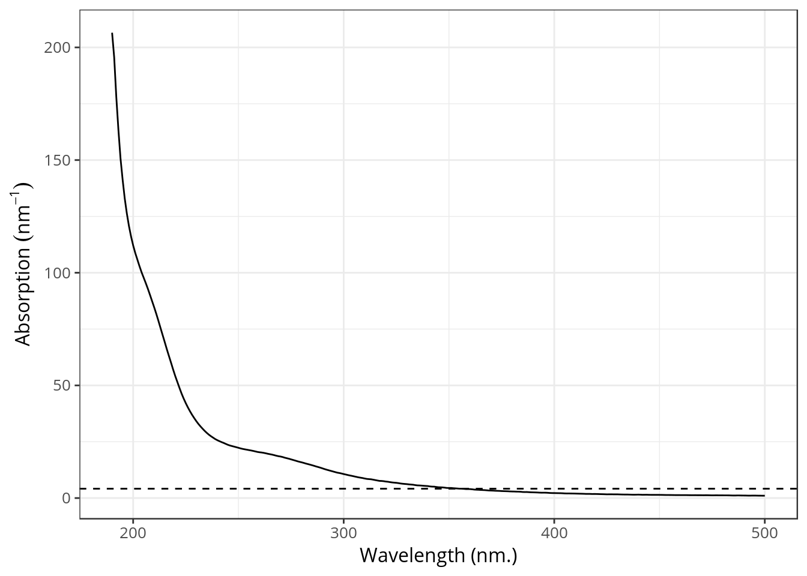

Chapter 3 Absorbance
Chromophoric fraction of the DOM pool (CDOM) is a major driver of underwater light characteristics (Kirk1994) which modulate many bio-optical processes such as primary production (Thrane2014, Seekell2015) and also constitute a natural screen protecting aquatic organisms against harmful ultraviolet (UV) radiations (Boily2012). Because of its colored nature, CDOM is known to strongly absorbs UV light. As wavelength increase, light absorbed by CDOM decrease exponentially 3.1.
library(cdom)
data(spectra)
spectra <- spectra %>% filter(wavelength <= 500)
p <- ggplot(spectra, aes(x = wavelength, y = spc1)) +
geom_line() +
xlab("Wavelength (nm.)") +
ylab(bquote(Absorption~(nm^{-1})))
p
Figure 3.1: Example of an absorption spectrum of CDOM.
3.1 How to write stuff
People have been using different terminology:
- ag(\(\lambda\))
- a(\(\lambda\))
- A(\(\lambda\))
- CDOM(\(\lambda\))
- Gelbstoff, yellow substance, gilvin, and humic substances) has more recently been provided the name chromophoric dissolved organic matter (CDOM).
3.2 Spectral slopes
- Exponential shape.
First modeled by Jerlov (1968) and Bricaud, Morel, and Prieur (1981) (equation \ref{eq:cdom1}).
\[\begin{equation} a_{\text{CDOM}}(\lambda) = a_{\text{CDOM}}(\lambda0)e^{-S(\lambda - \lambda0)} \label{eq:cdom1} \end{equation}\]Where \(a_{\text{CDOM}}(\lambda)\) is the absorption coefficient (m\(^{-1}\)), \(\lambda\) is the wavelength (nm), \(\lambda0\) is a reference wavelength (nm) and \(S\) is the spectral slope (nm\(^{-1}\)) that describes the approximate exponential rate of decrease of absorption with increasing wavelength. Higher slopes indicate a more rapid decrease in absorption with increasing wavelength. The \(S\) parameter is frequently used as a proxy for tracing photochemical and microbial-induced changes of CDOM [Moran2000,Twardowski2004,Helms2013] or to determine its origin [Stedmon2001].
Later modified by which introduced \(k\), a background constant (m\(^{-1}\)) accounting for scatter in the cuvette and drift of the instrument (equation \ref{eq:cdom2}).
\[\begin{equation} a_{\text{CDOM}}(\lambda) = a_{\text{CDOM}}(\lambda0)e^{-S(\lambda - \lambda0)} + \mathbf{k} \label{eq:cdom2} \end{equation}\]There are other mathematical formulations that can be used to model CDOM spectra. These are reviewed in Twardowski et al. (2004).
3.3 Nonlinear fitting
Because of it inverse exponential shape, absorption spectra are best modeled using non-linear fittings. In R this is done easy using the nls() function. As we can see from equation \ref{eq:cdom2}, the most commonly equation used to model CDOM spectra contains three parameters: a0, s, k.
mod <- nls(spc1 ~ a0 * exp(-s * (wavelength - 350)) + k, # define the formula
data = spectra, # where the data comes from
start = list(a0 = 5, s = 0.02, k = 0)) # initial guesses.
# show the summary information
summary(mod)##
## Formula: spc1 ~ a0 * exp(-s * (wavelength - 350)) + k
##
## Parameters:
## Estimate Std. Error t value Pr(>|t|)
## a0 0.2624416 0.0237320 11.06 <2e-16 ***
## s 0.0406974 0.0005989 67.96 <2e-16 ***
## k 4.1539547 0.2871120 14.47 <2e-16 ***
## ---
## Signif. codes: 0 '***' 0.001 '**' 0.01 '*' 0.05 '.' 0.1 ' ' 1
##
## Residual standard error: 4.187 on 308 degrees of freedom
##
## Number of iterations to convergence: 16
## Achieved convergence tolerance: 7.177e-06The value of \(S\) is 0.0406974 meaning that absorption is decreasing at a rate of 0.0406974 \(m^{-1}\) for each increase of 1 nm.
- k parameter (scattering, introduced by C A Stedmon and Markager (2001))

p + geom_line(aes(y = predict(mod)), col = "red")
3.4 Metrics
- \(S_{300-600}\) linked to DOM molecular weight (Colin A. Stedmon and Nelson 2015).
3.4.1 Slope ratio
The slope ratio (\(S_R\)) is defined as the ratio between \(S_{275-295}\) and \(S_{350-400}\) (Helms et al. 2008).
By calculating the ratio of the slope of the shorter wavelength region (275–295 nm) to that of the longer wavelength region (350–400 nm), a dimensionless parameter called “slope ratio” or \(S_R\) is defined. This approach avoids the use of spectral data near the detection limit of the instruments used, and focuses on absorbance values that shift dramatically during estuarine transit and photochemical alteration of CDOM (Helms et al. 2008).
Figure 3.2 shows in red the 275-295 and 350-400 nm spectral range.

Figure 3.2: Spectral range used to calculate the slope ratio.
Fluorescence
Jerlov, N.G. 1968. Optical oceanography. New York: Elsevier Publishing Company.
Bricaud, Annick, André Morel, and Louis Prieur. 1981. “Absorption by dissolved organic matter of the sea (yellow substance) in the UV and visible domains.” Limnology and Oceanography 26 (1): 43–53. doi:10.4319/lo.1981.26.1.0043.
Twardowski, Michael S., Emmanuel Boss, James M. Sullivan, and Percy L. Donaghay. 2004. “Modeling the spectral shape of absorption by chromophoric dissolved organic matter.” Marine Chemistry 89 (1-4): 69–88. doi:10.1016/j.marchem.2004.02.008.
Stedmon, C A, and S Markager. 2001. “The optics of chromophoric dissolved organic matter (CDOM) in the Greenland Sea: An algorithm for differentiation between marine and terrestrially derived organic matter.” Limnology and Oceanography 46 (8): 2087–93. doi:10.4319/lo.2001.46.8.2087.
Stedmon, Colin A., and Norman B. Nelson. 2015. “The Optical Properties of DOM in the Ocean.” In Biogeochemistry of Marine Dissolved Organic Matter, edited by Dennis A. Hansell and Craig A. Carlson, Academic P, 481–508. Burlington: Elsevier. doi:10.1016/B978-0-12-405940-5.00010-8.
Helms, John R., Aron Stubbins, Jason D. Ritchie, Elizabeth C. Minor, David J. Kieber, and Kenneth Mopper. 2008. “Absorption spectral slopes and slope ratios as indicators of molecular weight, source, and photobleaching of chromophoric dissolved organic matter.” Limnology and Oceanography 53 (3): 955–69. doi:10.4319/lo.2008.53.3.0955.